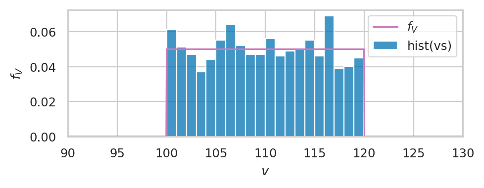

Exercises for Section 2.7 Simulation and empirical distributions#
This notebook contains the exercises from Section 2.7 Simulation and empirical distributions of the No Bullshit Guide to Statistics.
Notebooks setup#
import os
import numpy as np
import pandas as pd
import matplotlib.pyplot as plt
import seaborn as sns
# Figures setup
sns.set_theme(
context="paper",
style="whitegrid",
palette="colorblind",
rc={'figure.figsize': (5,2)},
)
%config InlineBackend.figure_format = 'retina'
# Simple float __repr__
import numpy as np
if int(np.__version__.split(".")[0]) >= 2:
np.set_printoptions(legacy='1.25')
Exercies#
E2.50#
Recall the random variable \(H \sim \mathrm{Pois}(\lambda\!=\!20)\)
that describes the number of hard disk failures in a data centre.
In Section 2.1,
we created a computer model rvH = poisson(20)
and used this model to answer various business questions.
Suppose you have a list hs = rvH.rvs(5000)
that contains \(5000\) random observations from \(H\).
Let’s revisit the questions and answer them using the list hs.
a) Plot the empirical PMF \(f_{\texttt{hs}}\) and the PMF \(f_H\).
b) Find the probability of the event \(\{ 15 \leq H \leq 20 \}\) from the list.
c) Estimate the location of the \(0.95\) quantile of \(H\).
d) Generate 12 bootstrap observations from the list hs.
e) Compute the expected value of the function cost defined in the book.
Compare the approximate answers you obtain from the list hs
to the values we obtained earlier in Section 2.1
Hint: For part d),
recall that “bootstrap observation from xs”
are obtained by sampling with replacement within the list xs.
# Set the random seed to a particular value to get a reproducible result
np.random.seed(45)
# Create the computer model rvH
from scipy.stats import poisson
rvH = poisson(20)
# Generate 5000 random observations from rvH
hs = rvH.rvs(5000)
# a)
from ministats import plot_epmf, plot_pmf
plt.figure(figsize=(10,3))
ax = plot_epmf(hs, ax=plt.gca(), name="hs")
plot_pmf(rvH, ax=ax, rv_name="H", label="$f_H$", color="C4");
{kind=link}
# b) Probability of the event {15 ≤ H ≤ 20}
len([h for h in hs if 15<=h<=20]) / len(hs)
0.4498
# b) Exact value of Pr({15 ≤ H ≤ 20})
sum([rvH.pmf(h) for h in range(15,20+1)])
0.4542283031233386
# c)
np.quantile(hs, 0.95)
28.0
# c) exact value
rvH.ppf(0.95)
28.0
# d) Generate random observations
# Set the random seed to a particular value to get a reproducible result
np.random.seed(46)
# Generate 12 random observations from the r.v. H
np.random.choice(hs, size=12, replace=True)
array([29, 20, 17, 16, 13, 16, 30, 16, 10, 20, 17, 12])
# e)
# Define the cost function
def cost(h):
if h >= 20:
return 150*h
else:
return 200*h
# Compute the expected value of `cost` for r.v. H using `hs`
sum([cost(h) for h in hs]) / len(hs)
3373.82
# e) exact value
rvH.expect(np.vectorize(cost))
3381.4219494471427
E2.51#
Recall the random variable \(K \sim \mathcal{N}(\mu_K\!=\!1000, \sigma_K\!=\!10)\)
that describes the kombucha volumes at the bottling plant.
In this exercise,
you’ll use a list ks that contains \(N=10\,000\) random observations from \(K\)
to answer the following probability questions.
a) Plot a histogram of the values in the list ks and the PDF \(f_K\).
b) Plot the empirical CDF of ks and the CDF \(F_K\).
c) Find the probability of the event \(\{ 980 \leq K \leq 1020 \}\) from the list.
d) Estimate the location of the first quartile of \(K\).
e) Compute a 90% central probability interval for \(K\).
f) Compute the expected value of the function payment
defined in the book.
Compare the approximate answers you obtain to the exact values that we obtained earlier in Example 3 in Section 2.4.
Hint: Use rvK.rvs(10000) to obtain the list ks.
# Set the random seed to a particular value to get a reproducible result
np.random.seed(45)
# Create the computer model rvK
from scipy.stats import norm
rvK = norm(1000, 10)
# Generate 10000 random observations from rvK
ks = rvK.rvs(10000)
# a)
import seaborn as sns
from ministats import plot_pdf
bins = range(960, 1040)
ax = sns.histplot(x=ks, stat="density", bins=bins)
plot_pdf(rvK, ax=ax, rv_name="K", color="C4");
{kind=link}
# b)
from ministats import plot_cdf
ax = sns.ecdfplot(x=ks)
plot_cdf(rvK, ax=ax, rv_name="K", color="C4");
{kind=link}
# c)
len([k for k in ks if 980<=k<=1020]) / len(ks)
0.9555
# c) exact value
from scipy.integrate import quad
quad(rvK.pdf, a=980, b=1020)[0]
0.9544997361036411
# d)
np.quantile(ks, 0.25)
993.4334734844825
# d) exact value
rvK.ppf(0.25)
993.2551024980392
# e)
np.quantile(ks, [0.05, 0.95])
array([ 983.47843998, 1016.58315384])
# e) exact value
[rvK.ppf(0.05), rvK.ppf(0.95)]
[983.5514637304852, 1016.4485362695148]
# f)
# Define the payment function
def payment(k):
if 980 <= k and k <= 1020:
return 2
else:
return 0
# Compute the expected value of `payment` for r.v. K using `ks`
sum([payment(k) for k in ks]) / len(ks)
1.911
# f) exact value
rvK.expect(payment)
1.9089994604952036
E2.52#
The cumulative distribution function of the random variable \(E \sim \mathrm{Expon}(\lambda)\) is \(F_E(b) = 1 - e^{-\lambda b}\), for \(b \geq 0\). Find the math expression for the inverse cumulative distribution function \(F_E^{-1}(q)\).
Hint: Start with the equation \(q = 1 - e^{-\lambda b}\) and solve for \(b\).
We start with the cumulative distribution function \(F_E(b) = 1 - e^{-\lambda b}\), and define a new variable \(q\) to describe the output of the function \(F_E\) when the input is \(b\): \(q = F_E(b)\). To find the inverse function \(F_E^{-1}\), we need to solve for \(b\) in the equation \(q = 1 - e^{-\lambda b}\). After some basic rearrangement we get \(e^{-\lambda b} = 1 - q\), taking the logarithm of both sides we get \(-\lambda b = \ln( 1- q )\), then after some simplification, we get \(F_E^{-1}(q) = b = - \tfrac{ \ln( 1- q ) }{ \lambda }\), which is the formula for the inverse of the cumulative distribution.
E2.53#
The random module provides the function random.random()
for generating observations
from the standard uniform distribution \(U \sim \mathcal{U}(\alpha\!=\!0,\beta\!=\!1)\).
Let’s test the quality of the random numbers produced by this function
by generating a list us of \(N=600\) random numbers
and comparing them to the model \(\texttt{rvU = uniform(0,1)}\).
a) Plot a histogram of the observations us and the PDF \(f_U\).
b) Inspect the empirical CDF \(F_{\texttt{us}}\) and the CDF \(F_U\) visually.
c) Generate a Q-Q plot of us versus \(U\).
d) Compute the mean, the variance, the skew, and the excess kurtosis of the data us
and compare them to the properties of \(U \sim \mathcal{U}(0,1)\).
e) Compute the Kolmogorov–Smirnov distance \(D_{\textrm{KS}}(\texttt{us},U)\).
import random
# Set the random seed to a particular value to get a reproducible result
random.seed(47)
# Generate one observation from `random.random()`
import random
random.random()
0.35184625582788265
import random
# Set the random seed to a particular value to get a reproducible result
random.seed(47)
# Generate 600 observations using random.random()
us = [random.random() for i in range(600)]
us[0:5] # first five observations
[0.35184625582788265,
0.430186245990098,
0.4536708635895742,
0.3434697408782532,
0.5124443649244089]
# a) Plot histogram of `us` and the PDF of rvU
import seaborn as sns
ax = sns.histplot(x=us, stat="density")
from scipy.stats import uniform
rvU = uniform(0,1)
from ministats import plot_pdf
plot_pdf(rvU, ax=ax, rv_name="U", color="C4");
{kind=link}
# b) Inspect the empirical CDF of the `us` and the CDF of `rvU`
# Plot the eCDF of the `us`
ax = sns.ecdfplot(x=us)
# Plot the CDF of `rvU`
from ministats import plot_cdf
plot_cdf(rvU, ax=ax, rv_name="U", color="C4");
{kind=link}
# c) Generate a Q-Q plot of the `us` versus `rvU`
# Wrap the data `us` as a NumPy array
us_array = np.array(us)
# Generate the Q-Q plot
from statsmodels.graphics.api import qqplot
qqplot(us_array, rvU, line="q");
{kind=link}
# d) Compare the variance, the skew, and the kurtosis of the `us` and `rvU`
# Wrap the data `us` as a pandas series object
us_series = pd.Series(us)
# Compare the mean of the `us` and `rvU`
us_series.mean(), rvU.mean()
(0.5135832191650309, 0.5)
# d) Compare the variance of the `us` and `rvU`
us_series.var(), rvU.var()
(0.0846487789841045, 0.08333333333333333)
# d) Compare the skew of the `us` and `rvU`
us_series.skew(), rvU.stats("s")
(-0.10282980248036674, 0.0)
# d) Compare the kurtosis of the `us` and `rvU`
us_series.kurt(), rvU.stats("k")
(-1.1795793838312343, -1.2)
# e) Compute the Kolmogorov--Smirnov distance between `us` and `rvU`
from scipy.stats import ks_1samp
ks_1samp(us, rvU.cdf).statistic
0.04155277761710846
E2.54#
Use the random numbers generated by random.random()
and the inverse CDF trick
to generate \(N=1000\) random observations from the uniform random variable
\(V \sim \mathcal{U}(\alpha\!=\!100,\beta\!=\!120)\).
a) Plot a histogram of the observations vs and the PDF \(f_V\).
b) Plot the empirical CDF \(F_{\texttt{vs}}\) and the CDF \(F_V\).
c) Generate a Q-Q plot of vs versus \(V\).
d) Compute the mean, the variance, the skew, and the excess kurtosis of the data vs
and compare them to the properties of \(V\).
e) Compute the Kolmogorov–Smirnov distance \(D_{\textrm{KS}}(\texttt{vs},V)\).
Hint: Find the formula for the CDF \(F_V(b)\) and invert it to get \(F^{-1}_V(q)\).
Hint:
Use rvV=uniform(100,20) to create a computer model for \(V\).
import random
# Set the random seed to a particular value to get a reproducible result
random.seed(43)
# Define the function `gen_v` that generate random observations from V
def gen_v():
u = random.random()
v = 100 + 20*u
return v
# Generate one observation from V
import random
gen_v()
100.7710367867476
# Set the random seed to a particular value to get a reproducible result
random.seed(43)
# Generate 1000 observations from V
vs = [gen_v() for i in range(1000)]
vs[0:5] # first five observations
[100.7710367867476,
113.92448645274106,
102.87866442790722,
109.25064509658175,
113.43293528235534]
# a) Plot histogram of `vs`
import seaborn as sns
ax = sns.histplot(x=vs, stat="density", bins=20, label="hist(vs)")
# Plot the PDF of rvV
from scipy.stats import uniform
rvV = uniform(100, 120-100)
from ministats import plot_pdf
plot_pdf(rvV, ax=ax, xlims=[90,130], rv_name="V", color="C4", label="$f_V$");
ax.set_xlim(90,130)
# FIGURES ONLY
from ministats.utils import savefigure
filename = "figures/statsprobsfigs/prob/generate_vsample_and_pdf_rvV.pdf"
savefigure(ax, filename)
Saved figure to figures/statsprobsfigs/prob/generate_vsample_and_pdf_rvV.pdf
Saved figure to figures/statsprobsfigs/prob/generate_vsample_and_pdf_rvV.png
{kind=link}

# b) Inspect the empirical CDF of the `vs` and the CDF of `rvV`
# Plot the eCDF of the `us`
ax = sns.ecdfplot(x=vs)
# Plot the CDF of `rvU`
from ministats import plot_cdf
plot_cdf(rvV, ax=ax, rv_name="V", color="C4");
{kind=link}
# c) Generate a Q-Q plot of the `vs` versus `rvV`
# Wrap the data `vs` as a NumPy array
vs_array = np.array(vs)
# Generate the Q-Q plot
from statsmodels.graphics.api import qqplot
qqplot(vs_array, rvV, line="q");
{kind=link}
# d) Compare the variance, the skew, and the kurtosis of the `vs` and `rvV`
# Wrap the data `vs` as a pandas series object
vs_series = pd.Series(vs)
# Compare the mean of the `vs` and `rvV`
vs_series.mean(), rvV.mean()
(109.85360803996666, 110.0)
# d) Compare the variance of the `vs` and `rvV`
vs_series.var(), rvV.var()
(32.712319248794365, 33.33333333333333)
# d) Compare the skew of the `vs` and `rvV`
vs_series.skew(), rvV.stats("s")
(-0.0057431543657164566, 0.0)
# d) Compare the kurtosis of the `vs` and `rvV`
vs_series.kurt(), rvV.stats("k")
(-1.1732315891226595, -1.2)
# e) Compute the Kolmogorov--Smirnov distance between `vs` and `rvV`
from scipy.stats import ks_1samp
ks_1samp(vs, rvV.cdf).statistic
0.0276402879346046
E2.55#
Repeat the steps in
to compare random values generated by the computer model scipy.stats.t
for Student’s \(t\)-distribution with \(\nu=7\) degrees of freedom \(T \sim \mathcal{T}(\nu\!=\!7)\).
Start by alias-importing scipy.stats.t as tdist,
creating the computer model rvT = tdist(df=7),
and generating a list of \(N=500\) random observations using ts = rvT.rvs(500).
a) Plot a histogram of the observations ts and the PDF \(f_T\).
b) Plot the empirical CDF \(F_{\texttt{ts}}\) and the CDF \(F_T\).
c) Generate a Q-Q plot of ts versus \(T\).
d) Compute the mean, the variance, the skew, and the excess kurtosis of the data ts
and compare them to the properties of \(T\).
e) Compute the Kolmogorov–Smirnov distance \(D_{\textrm{KS}}(\texttt{ts},T)\).
# Create the computer model for `rvT`
from scipy.stats import t as tdist
rvT = tdist(df=7)
# Set the random seed to a particular value to get a reproducible result
np.random.seed(50)
# Generate 500 observations from rvT
ts = rvT.rvs(500)
# a) Plot histogram of `ts`
import seaborn as sns
ax = sns.histplot(x=ts, stat="density", bins=30)
# Plot the PDF of rvT
from ministats import plot_pdf
plot_pdf(rvT, ax=ax, rv_name="T", color="C4")
ax.set_xlim(-5,5);
{kind=link}
# b) Inspect the empirical CDF of the `ts` and the CDF of `rvT`
# Plot the eCDF of the `ts`
ax = sns.ecdfplot(x=ts)
# Plot the CDF of `rvT`
from ministats import plot_cdf
plot_cdf(rvT, ax=ax, rv_name="T", color="C4");
ax.set_xlim(-5,5);
{kind=link}
# c) Generate a Q-Q plot of the `ts` versus `rvT`
# Wrap the data `ts` as a NumPy array
ts_array = np.array(ts)
# Generate the Q-Q plot
from statsmodels.graphics.api import qqplot
qqplot(ts_array, rvT, line="q");
{kind=link}
# d) Compare the variance, the skew, and the kurtosis of the `ts` and `rvT`
# Wrap the data `ts` as a pandas series object
ts_series = pd.Series(ts)
# Compare the mean of the `ts` and `rvT`
ts_series.mean(), rvT.mean()
(0.04689981130168988, 0.0)
# d) Compare the variance of the `ts` and `rvT`
ts_series.var(), rvT.var()
(1.4260985559274126, 1.4)
# d) Compare the skew of the `ts` and `rvT`
ts_series.skew(), rvT.stats("s")
(0.17470441996790034, 0.0)
# d) Compare the kurtosis of the `ts` and `rvT`
ts_series.kurt(), rvT.stats("k")
(1.2602680965343764, 2.0)
# d) ALT. using `scipy.stats.kurtosis` with the options `bias=False` and `fisher=True`
from scipy.stats import kurtosis
kurtosis(ts, bias=False, fisher=True)
1.2602680965343769
# e) Compute the Kolmogorov--Smirnov distance between `ts` and `rvT`
from scipy.stats import ks_1samp
ks_1samp(ts, rvT.cdf).statistic
0.037384815434187146